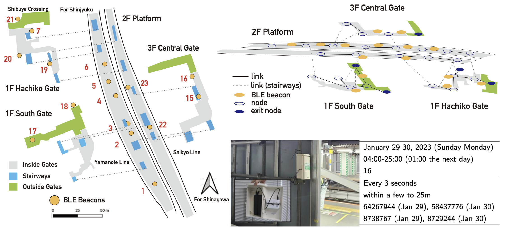
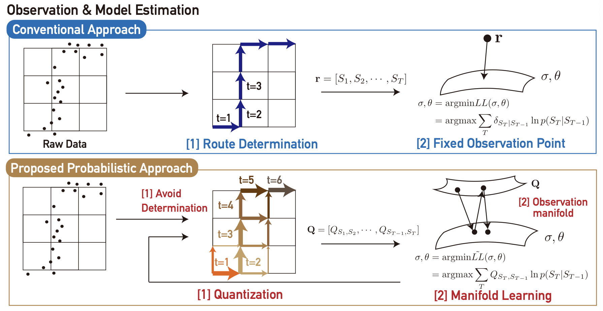
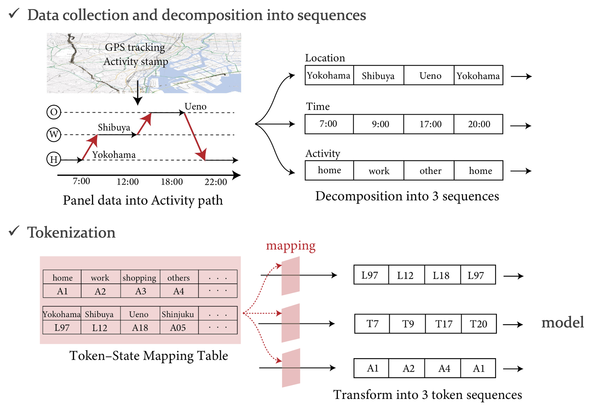
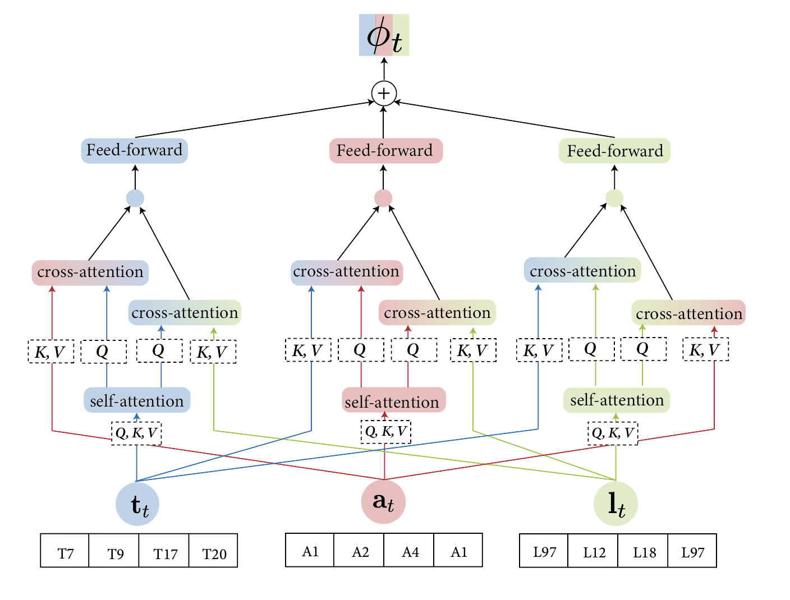
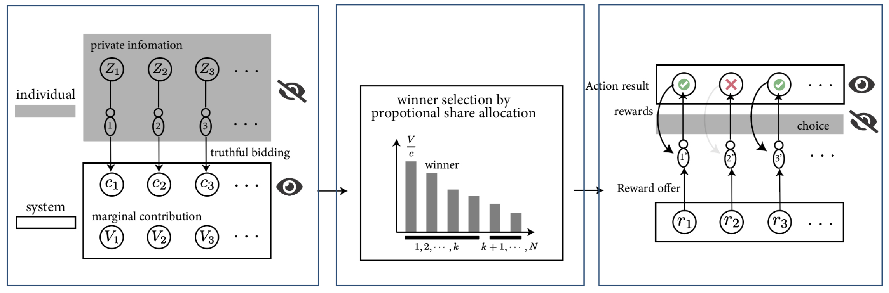

Research Interests
Observation and Modeling of Pedestrian Behavior in Indoor Spaces
In detailed indoor urban spaces such as railway stations, conventional GPS-based positioning often fails. To overcome this, I focus on sensor-based or Eulerian observation methods using BLE, Wi-Fi, and cameras...


Prediction and Generation of Activity Demand
Based on Activity-based models (ABMs), which view travel demand as derived from activities, predicting activity demand is the most fundamental approach to travel demand analysis...


Travel Demand Control via Dynamic Pricing
The origins of travel demand control date back to the proposal of the Pigouvian tax in 1920. While many proposals have relied on pursuing social optimality through internalizing externalities...
